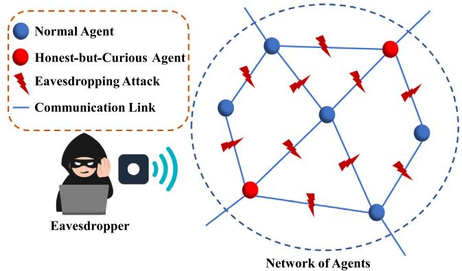

不要求你已经学过密码学。只需要知道“测量有误差”和“多个数可以加权平均”。学完要能回答：大家共同估计的是什么？哪些本地信息需要保护？为什么给通信加密还不够？本文把哪一步换掉了？本课是全景导读，不承担完整协议推导。
1. 从三台机器人协作说起
想象三台机器人在观察同一个移动目标。有的视角好，有的距离近，有的刚被遮挡。每台机器人都能给出一个位置判断，但没有谁始终最可靠。让它们交换信息、融合判断，可以利用彼此的观测能力。
问题是，交换的信息不仅告诉邻居“我认为目标在哪”，还可能透露自己的本地观测结果和估计可信程度。如果机器人分属不同机构，参与协作不一定意味着愿意公开这些细节。这只是帮助理解的场景，论文实际实验是线性时变系统的数值仿真，并不是机器人实机实验。
这篇论文的问题不是“不合作就保密”，而是：能否继续完成分布式状态估计，同时不直接交出每个节点的本地信息向量和信息矩阵？这里的“分布式”表示每个节点都在本地计算，并与相邻节点通信，不依赖一个集中收齐所有数据的服务器。
2. 可能不熟的术语：先把四件事分开
| 术语 | 本课中的意思 |
|---|---|
| State estimation 状态估计 | 真实状态不能直接完整看到，用有噪声的测量和运动模型推断它。 |
| Information vector / matrix 信息向量 / 信息矩阵 | 估计值与不确定性的另一种表示。它们不是网络数据包，也不是“信息越多越好”的日常含义。 |
| Covariance intersection（CI） 协方差交叉融合 | 在节点估计之间的相关性不完全已知时，用加权信息量进行融合，避免把相关信息当成独立证据重复累计。 |
| Honest-but-curious（HBC） 诚实但好奇 | 节点按协议执行，不伪造消息，但会利用自己合法收到的信息尝试了解别人的私有数据。 |
公式三层阅读：大家在估计同一个状态
是什么：$x_k$ 是共同关注的真实状态；$y_k^i$ 是节点 $i$ 的观测；$k$ 是时刻。$A_k$ 描述状态怎么变，$C_k^i$ 描述节点看到了什么，$w_k$ 和 $v_k^i$ 分别是过程噪声与测量噪声。
直觉：同一个目标，多个不同的观察窗口。节点并不是各自估计一个毫不相关的目标。
数学细节：这是论文式 (1) 的线性时变模型。本文假设噪声独立、零均值高斯，协方差正定。它不是任意非线性机器人系统的通用保证。
在论文模型中，系统矩阵 $A_k$ 和过程噪声协方差 $Q_k$ 为所有节点已知；节点 $i$ 知道自己的 $C_k^i$ 与测量噪声协方差 $R_k^i$。这能帮助你区分公共模型和本地数据。
3. 隐私问题发生在哪一步？
经典估计器 Algorithm 1 有四个阶段：初始化 → 预测 → 量测更新 → CI 融合。前三段主要在本地完成，最后一段必须与邻居交换信息。这就是论文选择改造的接口。
是什么：$P$ 表示误差协方差，$\hat{x}$ 是估计，$\Omega$ 是信息矩阵，$q$ 是信息向量。以上是基础信息形式，不要把新算法内部的矩阵自动等同于真实误差统计量。
直觉：标量情况下，方差越小，$1/P$ 越大，表示判断越集中。$q$ 则把估计值与这一尺度结合起来。
细节：比如估计为 2、方差为 0.5，则 $\Omega=2$、$q=4$；拿到二者可以还原估计值 2。因此，信息形式不是一种加密方式。
本文明确保护的是量测更新之后、融合之前的本地 $\tilde{q}_{k,i}^{p}$ 与 $\tilde{\Omega}_{k,i}^{p}$。不要直接把它扩写成“所有传感器数据、轨迹、身份和所有侧信息都被保护”。
是什么：省略时间和经典算法上标后的 CI 基线融合。$w_{ij}$ 是非负权重，每行权重和为 1；$\mathcal N_i$ 在本文中包含节点 $i$ 自己。
直觉：将邻居的判断按约定权重综合起来，而不是简单拼接数据。新算法会改变这里输入的量，不能先入为主地认为加密前后一定得到完全相同的融合结果。
4. 为什么“把链路加密”还不够？

普通链路加密好比把信封封好：路上的人看不到内容，但指定收件人拆开后仍能读到。如果收件人恰好是好奇的邻居，仅仅保护运输过程就不够了。本文想让邻居参与计算，却不直接交给它完整本地信息量。
| 对象 | 能力与范围 |
|---|---|
| 外部窃听者 | 监听通信链路，论文讨论其能截获全网通信的情形。 |
| 不合谋 HBC | 各自根据参与协议所见信息进行推断，不与其他好奇节点交换推断资料。 |
| 弱合谋 HBC | 针对一个正常节点，至少有一个其他邻居不参与合谋。 |
| 强合谋 HBC | 针对一个正常节点，其所有其他邻居都是 HBC 且联合行动。“其他”排除节点自身。 |
HBC 的前提是遵守协议。主动伪造测量、篡改消息、冒充节点和破坏可用性不属于同一保证。读到“抵抗强合谋”时，要连同这个前提一起读。
5. 论文给出的路线：能在密文上做计算
Paillier 的关键能力是加法同态：在合适的同一公钥与模运算规则下，对密文做指定运算，解密结果对应明文的加法或已知整数倍。它不是“任何计算都能直接在密文上做”。
- 先做编码：把实数向量、矩阵的元素按尺度量化成整数。因为原生 Paillier 操作的是有限整数消息空间，不是无限精度实数。
- 再做加密交互：节点 $i$ 发出自己的密文、公钥和编码尺度；邻居 $j$ 在密文上结合本地信息与随机掩码，返回处理后的量。私钥留在对应节点本地。
- 恢复可融合量：节点 $i$ 解密并组合回复，获得与双方数据有关的混合量，而不是直接收取邻居原始信息向量与矩阵。
- 装回估计器：Algorithm 3 保留本地预测和量测更新，将融合阶段换成隐私保护版本，并对信息矩阵加入量化相关修正项。
三个核心结果可以这样记：Algorithm 2 是通信协议；Theorem 1 说明如何由通信结果完成融合；Algorithm 3 是完整估计器。安全分析与稳定性分析是后续分别需要检查的两条证据链。
6. 精读时先立住四条边界
- 有加密不等于零泄漏。本文改进编码把符号放在密文外。课程会区分作者的隐私主张、实际公开字段，以及完整协议还需要的论证，不把“难以恢复完整数据”写成“看不到任何信息”。
- 少轮通信不等于低总时延。论文与若干多轮共识方案比较通信次数；加密计算、数据包体积和密钥管理仍有代价。相对未加密单轮基线，它增加了交互。
- 均值有界不等于均方误差有界。Theorem 3 明写的是估计误差期望的范数有界；证明前的文字却使用了 mean square。课程以公式所述对象为准，并指出这一不一致。
- 数值结果支持，不代替证明。论文用 100 个节点、200 步区间和 500 次 Monte Carlo 试验评估。有限实验不证明所有时刻成立，也不等于 TB3 上已经具备实时性。
7. 合上正文，试着回答
练习一：机密信息在哪个接口？
有人说：“我们的通信加密了，收到数据的邻居也就不可能了解我的本地估计。”这个说法忽略了谁？
展开答案与解释
练习二：信息形式是不是加密？
标量情形中，某节点给出 $\Omega=4$、$q=12$。估计值是多少？这说明了什么？
展开答案与解释
练习三：判断结论的力度
误差以相同概率为 +100 或 −100。平均误差为零，是否说明每次估计都很准？
展开答案与解释
本文把“交换原始本地信息量”改成“通过加密交互获得可用于融合的混合量”，希望同时兼顾协作估计与隐私；但理解方法必须同时检查公开信息、随机融合权重、量化误差和理论保证的范围。
接下来的学习主题是信息滤波与 CI：为什么未知相关性会让直接叠加证据变得危险？后续页面尚未发布，本页暂不放置无效跳转。哪里卡住了，可以把小节标题或练习答案发给我，我们从那里继续讲。
原文阅读定位
建议回看原文 Section 1、Section 2.1–2.4、Algorithm 1 与 Fig. 1；本课方法地图对应 Section 3，边界提醒对应式 (6)、Theorem 3 与 Section 5。来源：论文 DOI。本课是中文教学解读，不是逐字翻译。